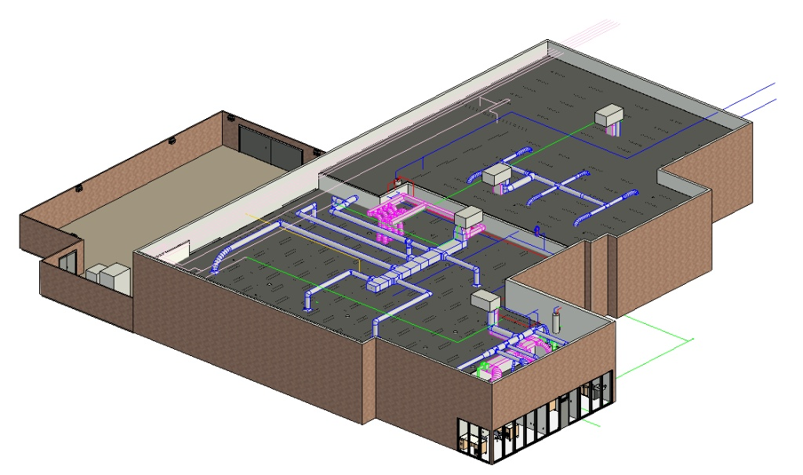
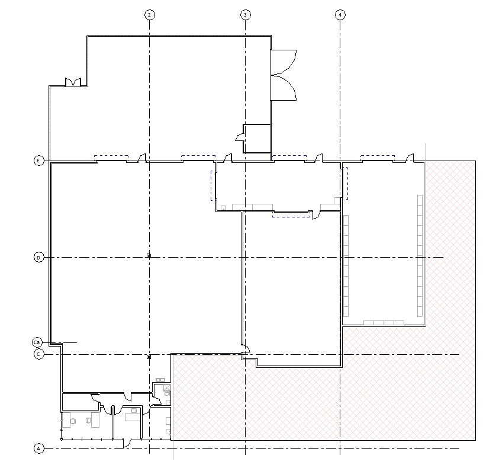
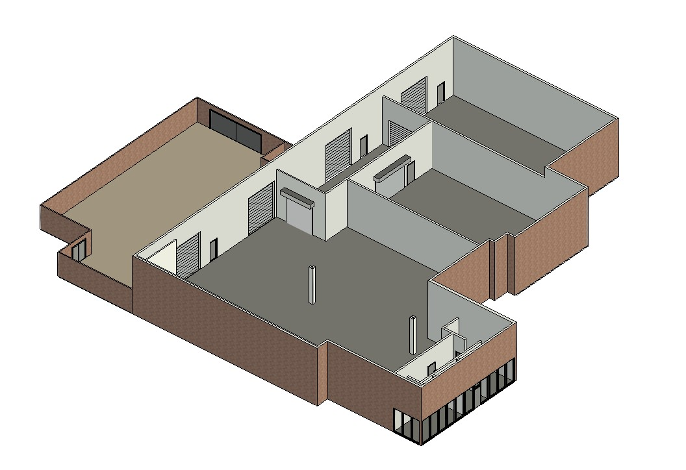
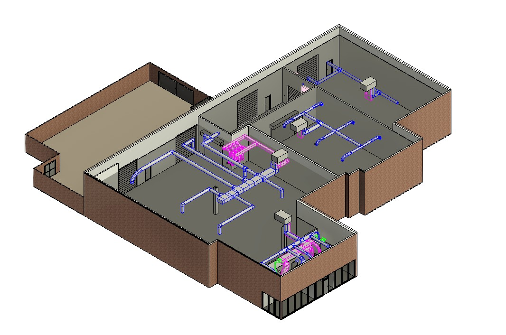
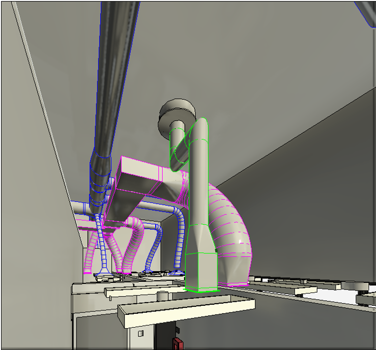
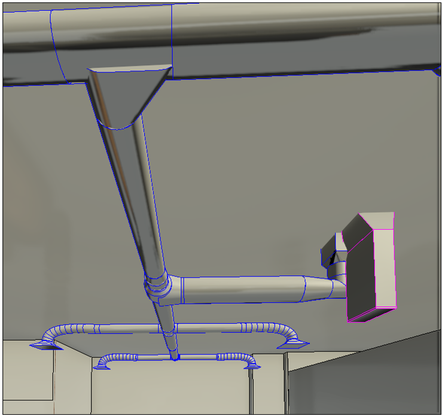
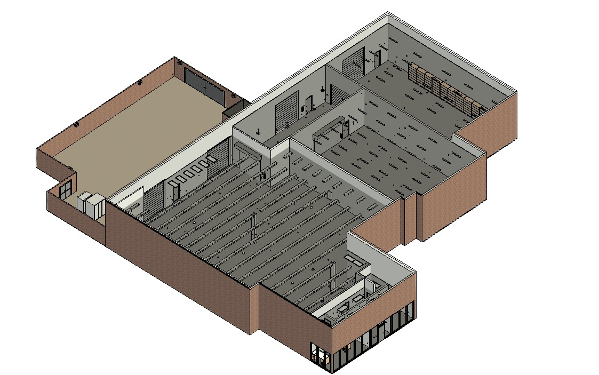
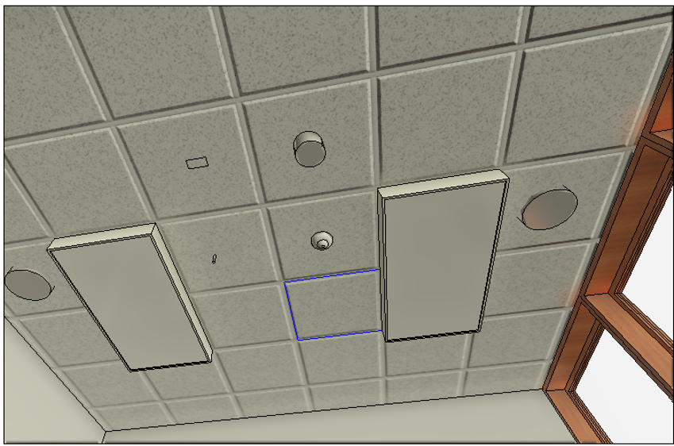
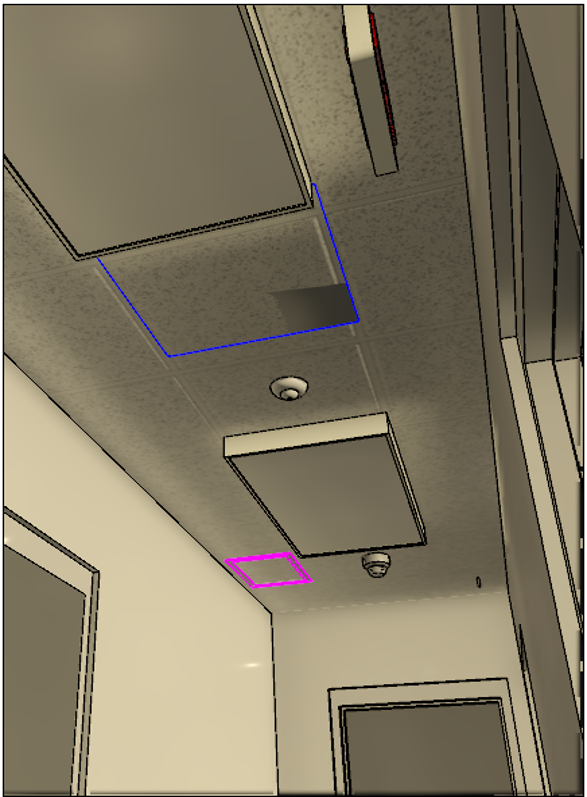
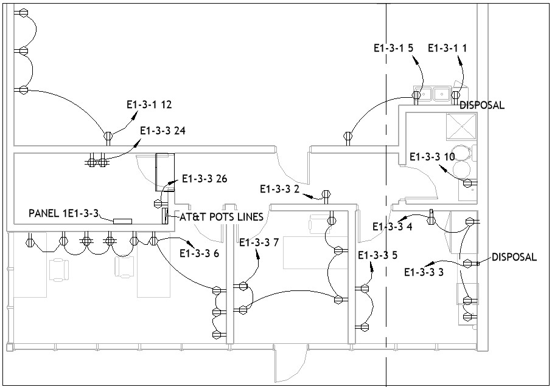

Starting from Existing Drawings
The project began with existing AutoCAD drawings and engineering documentation. These references were used to recreate the building accurately within Autodesk Revit before adding mechanical and electrical systems.
Engineering Internship Project Details

During my engineering internship, I translated legacy AutoCAD drawings and engineering documentation into accurate Autodesk Revit models. The project focused on updating building information models to reflect existing conditions, improving documentation quality, and supporting coordination between architectural, mechanical, and electrical systems.
My primary responsibilities included creating and updating Revit models from existing engineering drawings, modeling mechanical and electrical systems, generating construction documentation, and verifying model accuracy against available as-built information. This work required close attention to detail, technical drawing interpretation, and adherence to professional BIM workflows.

The project began with existing AutoCAD drawings and engineering documentation. These references were used to recreate the building accurately within Autodesk Revit before adding mechanical and electrical systems.

Walls, floors, ceilings, and structural elements were modeled to establish the building geometry. Maintaining dimensional accuracy was essential before coordinating additional disciplines.



Mechanical equipment, ductwork, and associated components were placed and connected within the Revit model to accurately represent the building's HVAC systems. These views illustrate the routing of ductwork, equipment placement, and coordination required to maintain proper clearances throughout the building.



Lighting fixtures, switches, receptacles, and electrical panels were modeled according to project documentation. Reflected ceiling plans were generated to communicate lighting layouts and electrical coordination for construction documentation.

The completed model integrated architectural, mechanical, and electrical systems into a coordinated BIM environment capable of generating accurate plans, sections, and isometric views for documentation.

A significant part of my internship involved updating as-built documentation to accurately reflect existing building conditions. Using Autodesk Revit and AutoCAD reference drawings, I revised building models so that floor plans, reflected ceiling plans, and MEP layouts matched the installed systems.
Maintaining dimensional accuracy across multiple building systems required careful comparison between legacy drawings and the developing Revit model. Small inconsistencies in equipment placement, elevations, or routing required iterative refinement to ensure accurate as-built documentation and coordinated MEP layouts.
This internship strengthened my understanding of professional BIM workflows, construction documentation, and multidisciplinary coordination. Working with real engineering projects improved my ability to interpret technical drawings, develop accurate Revit models, and appreciate the importance of precision in building information modeling.